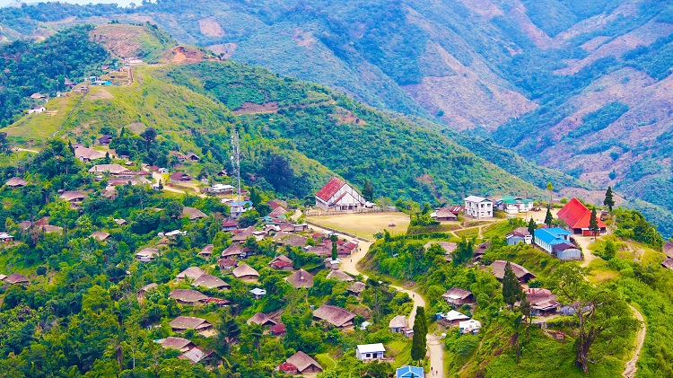
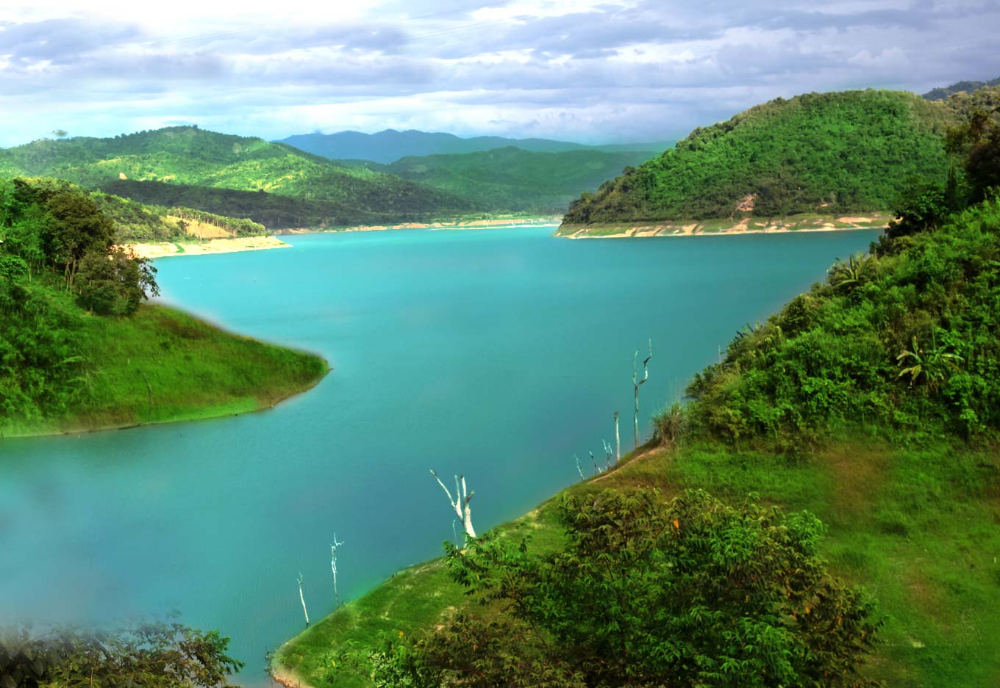
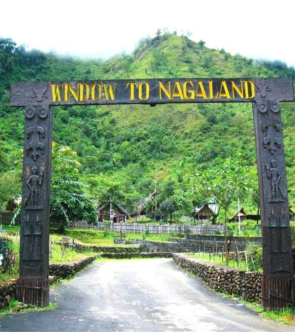
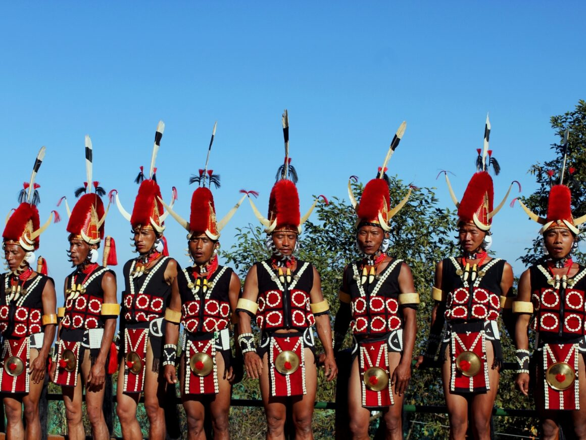
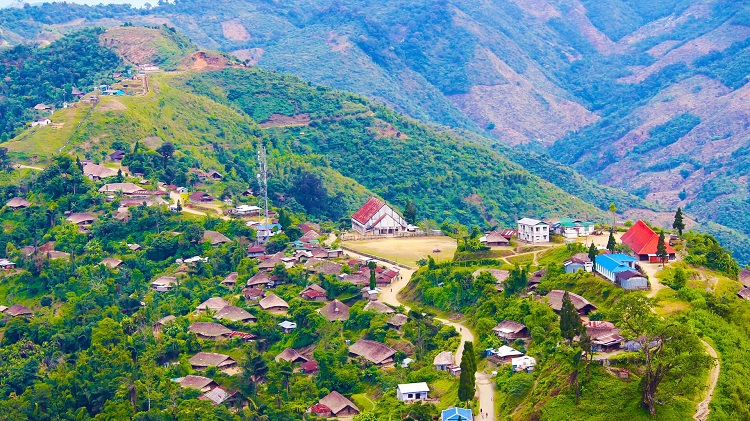
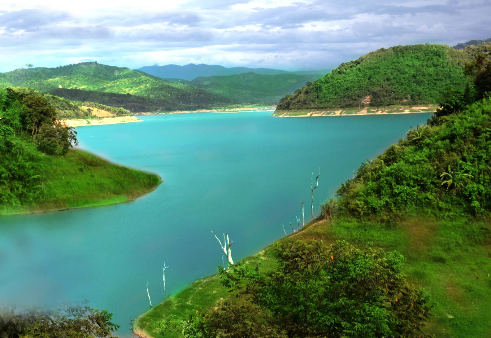
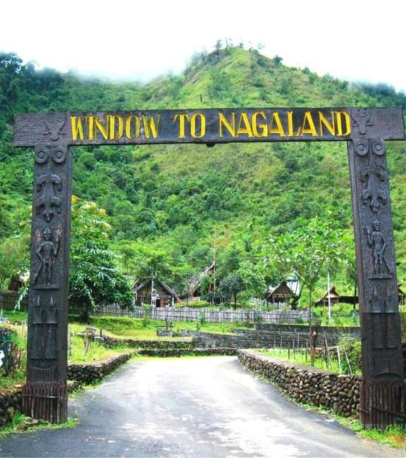
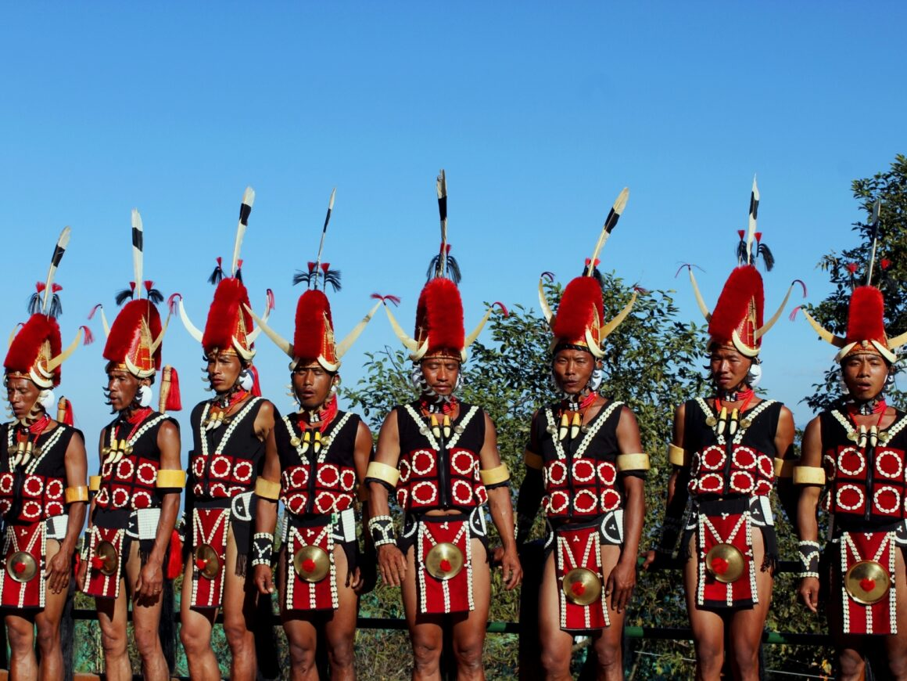

"Lush verdant hills that remain home to the sixteen powerful and charming Naga tribes."
Nagaland is one of North East India’s most culturally vibrant and scenically stunning states. Tucked in the Naga Hills, it is home to 16 major tribes, each with its own distinct customs, languages, and traditional attire. The state is a living museum of indigenous heritage, with colorful festivals like the famous Hornbill Festival, which showcases Naga music, dance, crafts, and cuisine.
Beyond its rich cultural tapestry, Nagaland offers unspoiled natural beauty—rolling hills, dense forests, and serene valleys ideal for eco-adventures. Trekking to Dzukou Valley, often called the “Valley of Flowers of the East,” or visiting the mystical Longwa village, where homes straddle the India-Myanmar border, are just a few of the unique experiences awaiting travelers.
For conscious explorers, Nagaland promises more than just a journey—it offers a chance to connect with resilient communities, ancient traditions, and raw, untouched landscapes. With its low-impact travel appeal and deeply rooted tribal ethos, Nagaland is a true gem for those seeking authenticity, adventure, and sustainability.
Travel Map
Travel Plan
Cultural & Tribal Experiences
Hornbill Festival (Kisama Village) – The "Festival of Festivals" showcasing Naga culture.
Dzukou Valley Trek – Beautiful valley shared with Manipur.
Longwa Village (Mon District) – Experience cross-border tribal life (half the village is in Myanmar!).
Adventure & Wildlife
Khonoma Green Village – India’s first green village.
Intanki Wildlife Sanctuary – Home to hoolock gibbons and other exotic species.

 






